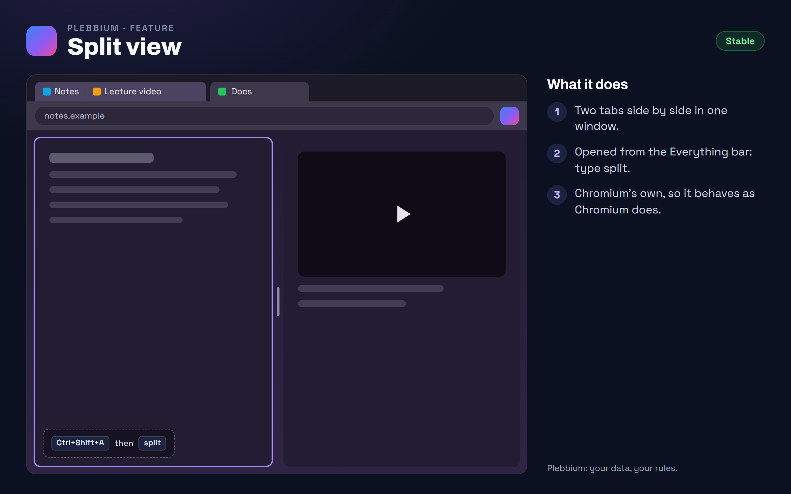

All features › Shipped › Split view
Split view
Stablesince 3604Two tabs side by side in one window: Chromium's own split view, opened from the Everything bar.

How to use it
- Press Ctrl+Shift+A, type split and choose the split command.
- Split tabs are never put to sleep or archived by Calm tabs.
When it arrived
156.0.8078.360418 Oct 2026 · Beta and Stable
Split view, from the Everything bar.
Why it works this way
Chromium's own
Chromium has a split view of its own, so Plebbium opens it rather than copying it, and gets every fix Chromium makes to it.